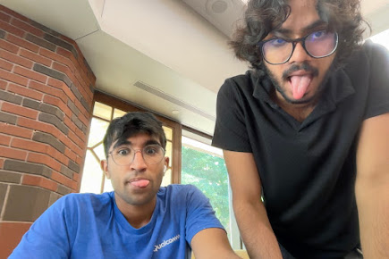
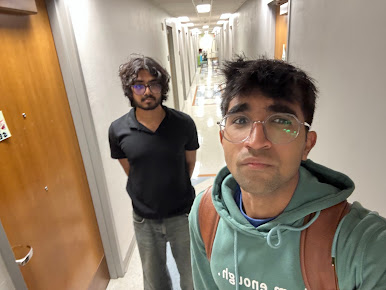
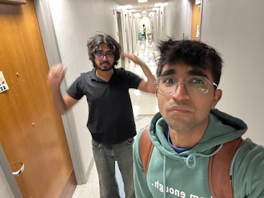

67 questions
The Seno Purity Test
A highly scientific measure of how deep you are in the Seno cinematic universe.
Caution: This is not a bucket list. Completing every item may result in chocolate milk dependency, 3am philosophy, and involuntary climbing assessment of campus furniture.


Your Seno Purity Score:
/100Untouched by the Seno cinematic universe.

For everyone taking this
Check anything you have personally witnessed. The score starts at 100 and drops as you admit how much Seno lore you have survived. Tap a row for a tiny goofy Seno artifact.